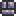

Pearlsand Block
| Pearlsand Block | |
|---|---|
| Statistics | |
| Type | Block Crafting material |
| Max stack | 250 |
| Use time | 14 |
Pearlsand Block is the Hallowed form of normal Sand Block. The only real difference between the two is that Pearlsand can spawn Light Mummies and Hallow enemies, while normal sand only spawns normal mummies and normal Desert enemies.
At hardmode any hallowed block will turn regular sand blocks that are up to three squares away into Pearlsand.
On top of that Pearlsand (just like Ebonsand) cannot be used to make glass. Something to keep in mind as the Corruption and Hallow slowly eat away at your ocean and desert biomes if you intend to make potions in hardmode. Luckily there is Vile Powder, that converts hallowed blocks back to regular state.
Crafting
Used in
| Result | Ingredients | Crafting Station | |
|---|---|---|---|
|  | Pearlstone Brick | Pearlsand Block(1) | |
| Pearlstone Block(1) | |||
History
- 1.1: Introduced.